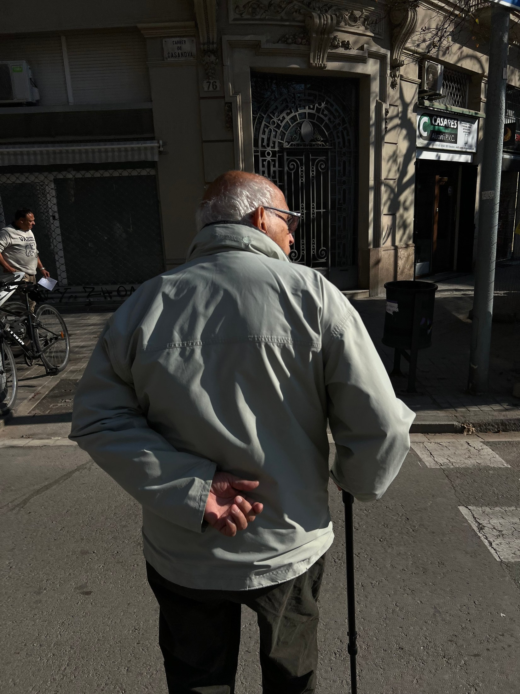
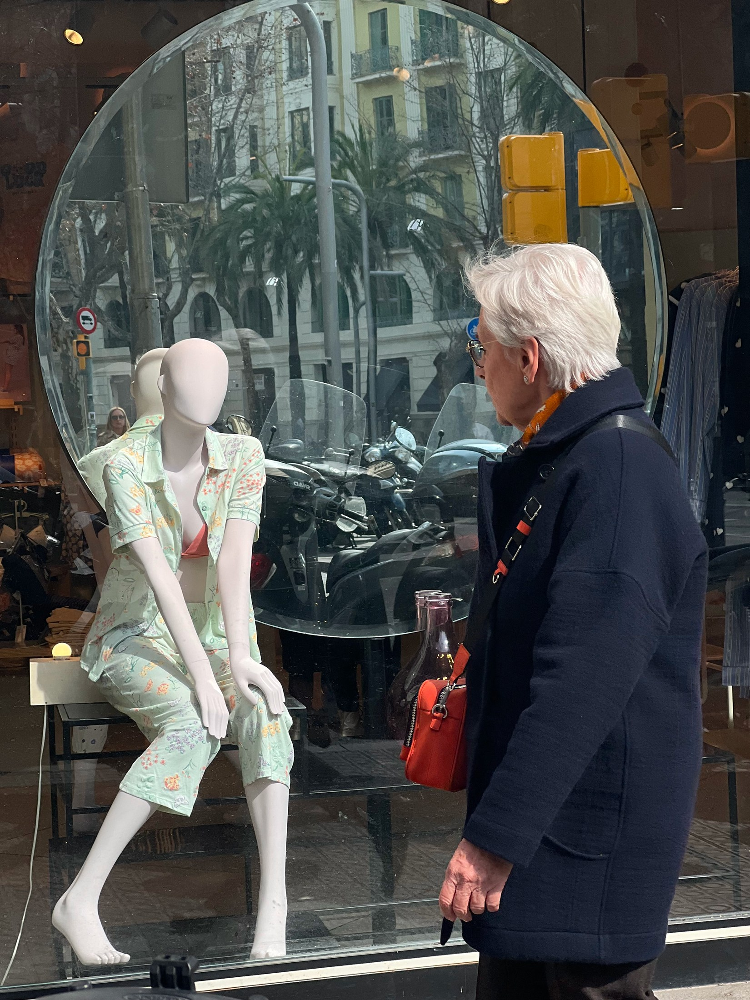
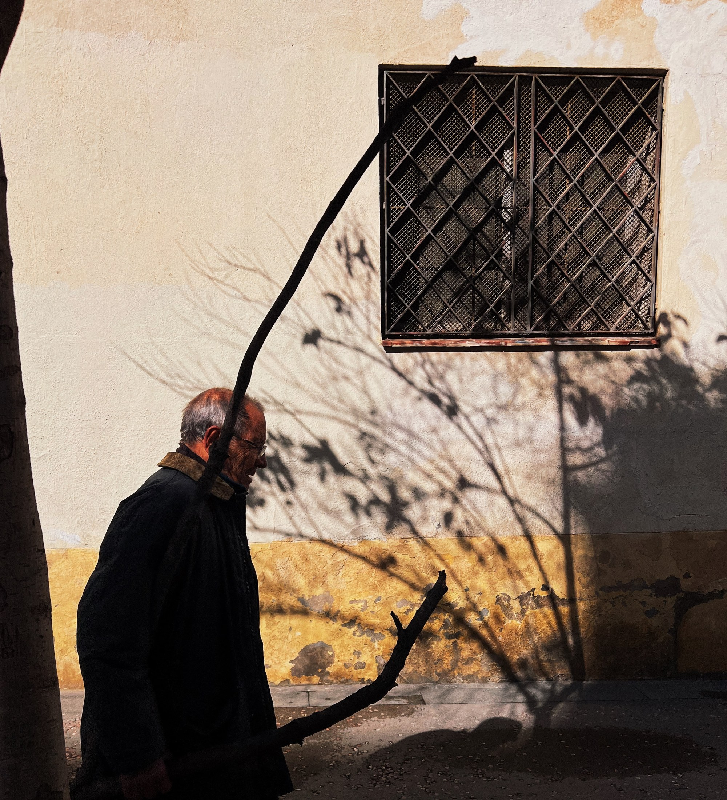
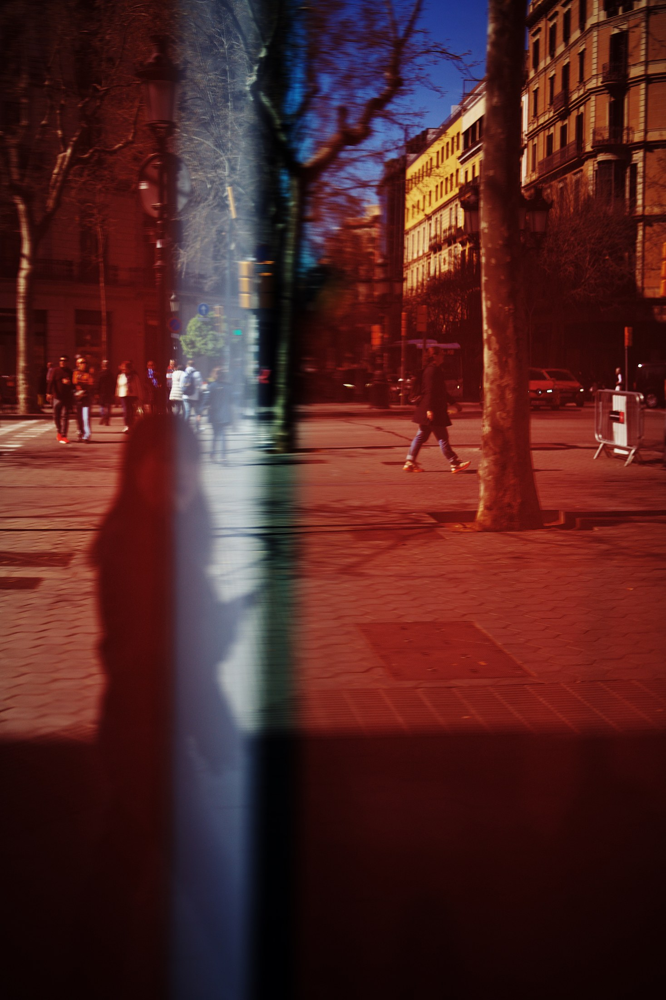
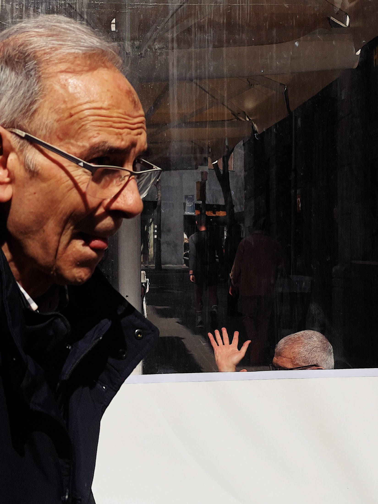
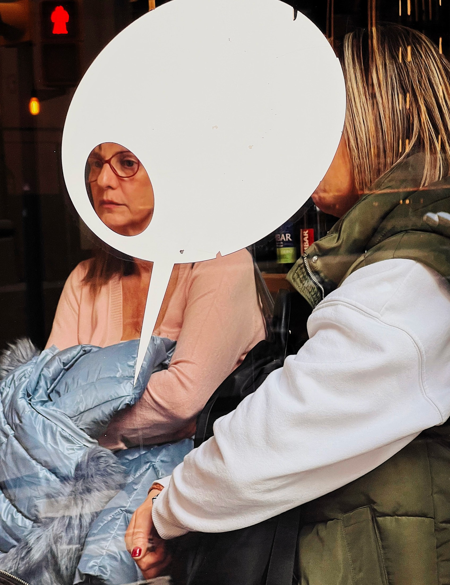
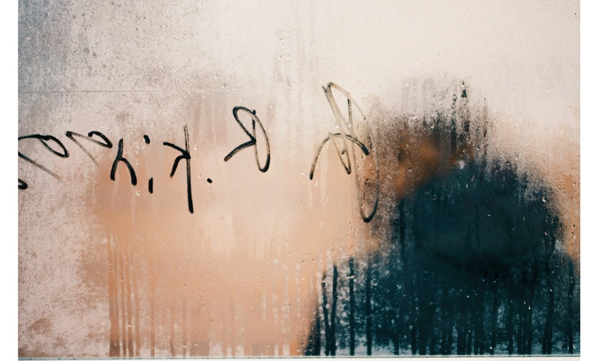

Barcelona · nine photographs · Andrei Andreev
In 1613 Luis de Góngora began a poem called Soledades — plural, as if one solitude were never the whole story. Three centuries later Antonio Machado gave the same title to his first book. Between the two, the south of Spain turned loneliness into a musical genre: the soleá, the darkest branch of flamenco, grows out of the word soledad. A culture famous for closeness — for tables that never empty and streets that never go quiet — has been writing about being alone for four hundred years, and always in the plural.
Barcelona, where these photographs were taken, is the city where the old word acquired an official life: the municipality runs a strategy against soledad no deseada — unwanted loneliness. There are meetings, budgets, indicators. The man walking with his hands folded behind his back along Carrer de Casanova is, statistically speaking, what that strategy is about. He doesn't know it. He is just walking.
This series is about how a southern city — a city built as a promise of company, with squares the size of rooms and dinners that start at ten and end when they end — holds a person who is, at this hour, alone. Every frame here is a stage set for a dialogue: a shop window, a street wall, a tram avenue. The dialogue didn't happen. A woman talks to a mannequin with her eyes. A palm presses against the glass from the other side of a passage. A face looks out of an empty speech balloon — the word taken away by the very object it holds.
The frames are numbered like poems in a collection — Soledad I, Soledad II — because that is what they turned out to be: not portraits of strangers, but stanzas of one poem found on different streets. I photographed them as an outsider — someone who watches the language of closeness spoken fluently all around him and does not speak it himself. Maybe that is why I kept noticing the ones who had, for a minute, fallen silent too.
The last photograph is a message scratched with a finger on a fogged window. By now it has evaporated. Solitudes work like that: the city files them, poetry keeps count of them, and the glass — the glass lets them go.






